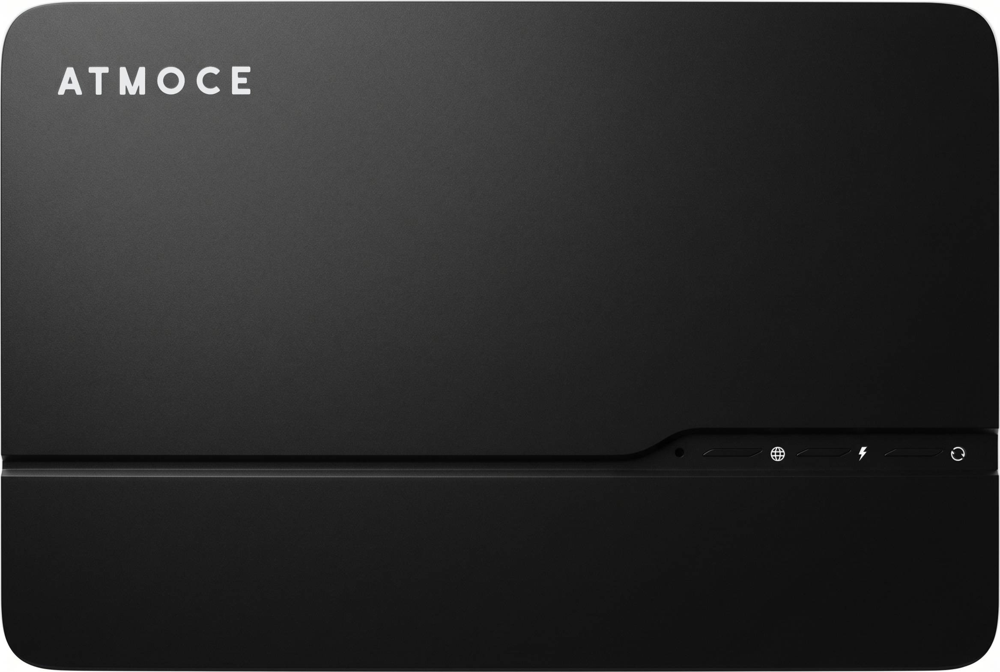
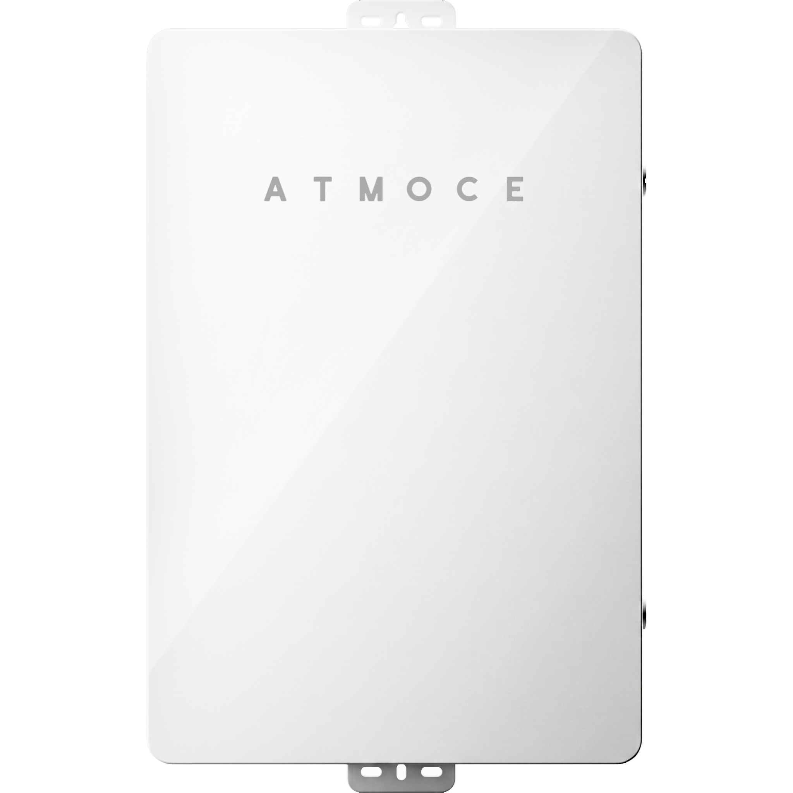
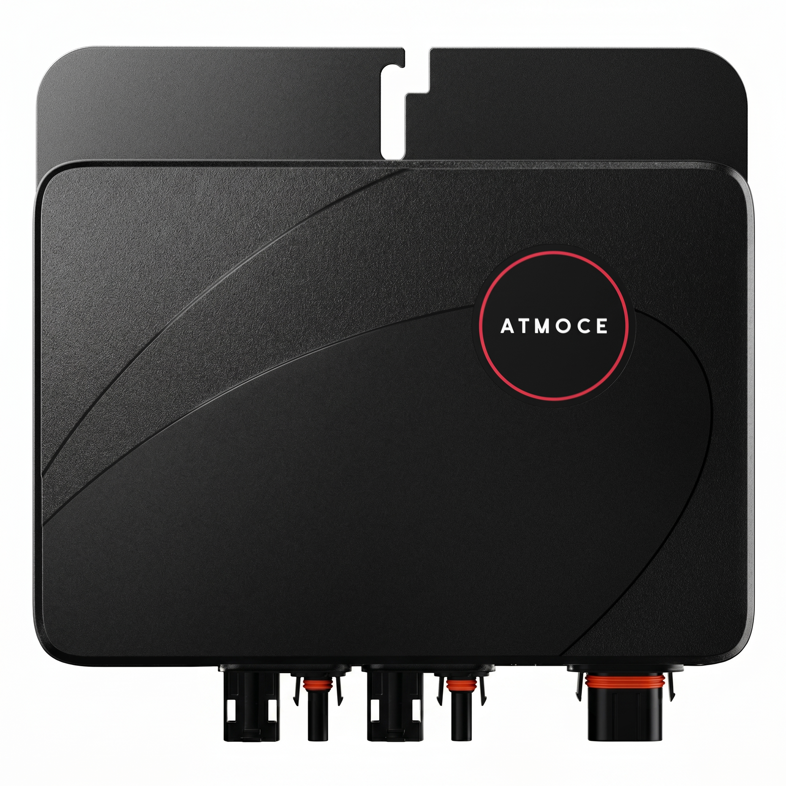

ATMOCE Product Asset Upgrade
A private product-image refinement review for ATMOCE. The page compares original product renders with final AI-assisted outputs, focusing on cleaner silhouettes, improved material smoothness, clearer branding, and presentation-ready product assets.


Product Refinement
The comparison format is intentionally direct: original product material on the left, final AI-refined asset on the right. This makes edge cleanup, material control, product readability, and branding clarity easier to review.





Material And Logo Detail
Drag the center line to inspect the logo area, black surface texture, product edge cleanup, and lighting consistency after the AI refinement pass.
White Surface Clarity
A closer A/B crop for checking the white product face, ATMOCE wordmark, subtle panel gradients, and edge rendering on a cleaner final asset.
Ready For Review
Additional final outputs are shown as a clean asset set so the client can review the product range without forcing uncertain one-to-one matching where source names differ.


